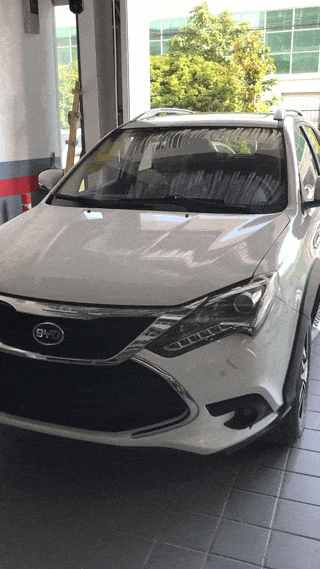
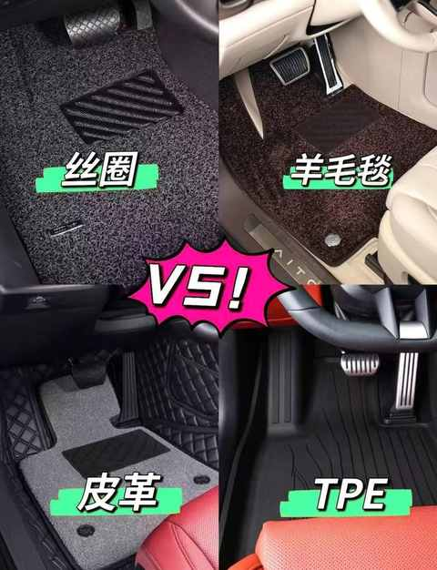
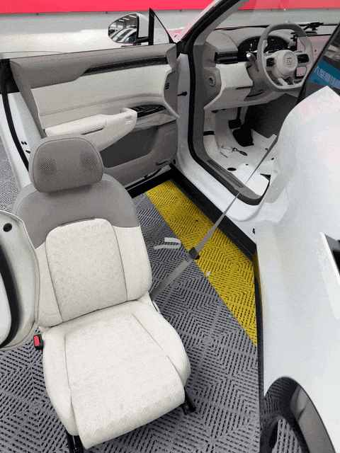
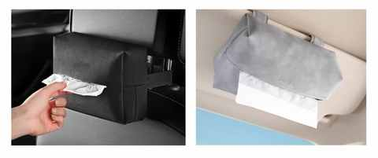
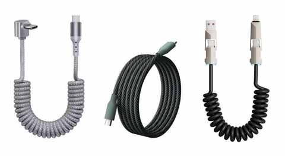
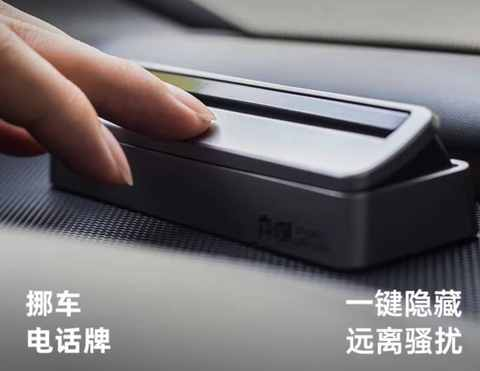
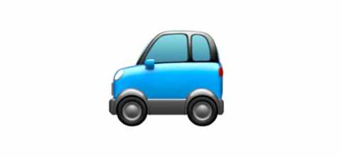

弯路没少走！8年新能源车主的真心话：这10件车载好物，日常用车真的离不开！
一、前言
在2017 年成为人父的时候，正值科目三和科目四的考试，待顺利拿到驾照便马不停蹄的开始看车，最终在 5 月份提车，正式成为了一名新能源车主。

二、 必备的 10 个车载好物
这次推荐的 10 个车载好物，都是个人在 8 年的用车体验和不断踩坑中觉得必备的车载好物。
随着时间的推移，在日常用车中，你可能也会越来越觉得下面这 10 个物件真心是一个都不能少！
1️⃣ 脚垫 和 后备箱垫
必备理由：
方便打理，从而比较好的保持车内整洁。
相关常识：

- 区分各种材质、工艺、做工、车型……
- 和手机壳一样，基本是专车专用
- 价格几百到几千的都有，和品牌、材料、做工等相关
- 各电商平台有海量的商品可供选择，汽修店也有脚垫售卖
- 磨损是难免的，可能隔3-5 年需要更换一次
- 相较后备箱垫，脚垫的选择值得花费多一点
经验分享：
- 如果提车的礼品也官方脚垫，可先用着，不喜欢再换
- 在提前和销售沟通得知赠送的非官方脚垫，可再做另外选择
- 如选购第三方脚垫，优先在大品牌的官方店铺购买符合你车型的产品
- 可优先选择老板也做自媒体的门店，他们会更重视口碑和服务
去年换车的时候尝试了全包的脚垫：
从抖音上找到了一个线下店，提车当天直接联系销售把车开到店里面安装的，价格根据材料 900-3000 不等，现场选材料和配色，然后现场制作现场安装。
从选好材料到安装好一起花了两个多小时，因为全包脚垫安装需要拆卸座椅，安装好之后会有安装工人把座椅复位好。

现在已经用了9 个多月，没有什么不好的体验，接下来也会继续观察其磨损情况。
2️⃣ 墨镜
必备理由：
经常开车的都懂，在阳光明媚的时候，墨镜有多重要。
相关常识：
- 无需购买专门的车载墨镜
- 有折叠款和不可折叠款可选
- 近视也能戴墨镜
- 区分偏光片与普通镜片
经验分享：
- 不宜过重或过紧的，长时间佩戴很累
- 最好别选金属框的，如果夏天停在户外，墨镜会过烫
- 墨镜放在车上的固定位置，每次下车前就放回去
3️⃣ 隔热膜
必备理由：
比给手机贴膜重要 100 倍，贴在挡风玻璃和车窗玻璃上的膜，能隔热、 防晒、防紫
相关常识：
- 价格已相对比较透明，各家差别不大
- 最终的贴膜效果与门店师傅的手艺关系大
- 选择知名品牌能有效降低风险
经验分享：
- 建议透光度优先，不宜过暗，偏暗会影响夜间开车的视野及安全性
- 可优先选择老板也做自媒体的门店，他们会更重视口碑和服务
4️⃣ 车载垃圾袋
必备理由：
车上的垃圾需要有一个不影响车内整洁的去处。
经验分享：
- 能否粘的很牢固都是次要的，最最重要是要能无痕的撕下来胶水不会粘在车上，清理残留的胶水特别麻烦。
- 日常前后排都要在中间位置贴一个垃圾袋，然后养成定期清理的习惯。
- 建议选择偏厚且能立起来的垃圾袋
5️⃣ 新交规车牌架框
必备理由：
- 能有效防止有人想掰弯你的绿牌
- 在涉水的时候减小牌照被水冲走的概率
相关常识：
- 区分通用款和专车专用款，优先专车专用款
- 一定要选符合新交规的产品，谨防不必要的扣分和罚款
经验分享：
- 在一次牌照被路边菜地的网子弄弯之后懂得的道理：如果通过某些措施能防患于未然，一定把这件事先做了
6️⃣ 手机支架
必备理由：
现在车机已经很强，但是手机要放在一个合理的位置，方便拿取和查看信息。
经验分享：
- 每个车适合放手机的位置不同，要具体车型具体分析：中控屏左侧、主驾空调出风口、中间空调出风口……
- 手机一定要放在足够稳的支架上，把掉落的可能降到最低
- 安全第一，放手机的位置不能影响到行车安全
7️⃣ 纸巾盒
必备理由：
- 开车的时候很难不做下面几个事情：挖鼻孔、打喷嚏、吃东西，那么放纸巾的纸巾盒就是刚需。
经验分享：
- 每个车能放纸巾的位置不同，建议大小适中的纸巾盒
- 带绑带的布质或皮质的纸巾盒能稳定的放在更多位置

8️⃣ 充电线
必备理由：
- 以防不备的安全冗余，让你在极限场景下也能不耽误事情顺利进行。
- 如果你的手机没电了，距离再过 15 分钟就要到地方，这个时候就别用无线充电啦，直接用有线快充到地方也有了70% 左右的电量。
相关常识：
- 不同车型的充电口的不同：位置、接口类型、快充功率……
- 有线更靠谱，开车过程中手机在无线充电的位置并不稳
- 不同车型支持的无线充电配置有差别，可能你的手机不适配在车上无线快充
经验分享：
- 一定要支持快充，且兼容多个厂商
- 可伸缩或可磁吸，不占地方且好找
- 多接口视频，能兼容更多设备
- 弯头或许更稳，部分 充电口的位置刁钻

9️⃣ 挪车号码牌
必备理由：
难免有时候需要在不熟悉的地方临时停车，要让其他人能联系到你
经验分享：
- 请选择支持显示和隐藏手机号的号码牌
- 不建议仅使用二维码，避免在信号不好的位置无法和你联系

🔟 雨伞 ⭐️ ）
必备理由：
说不定突然就下雨了，车里有伞和没伞的区别巨大。
经验分享：
- 可主驾和副驾各一把，后排 1-2 把
- 用好闲鱼，因为很多车厂的试驾礼品都是雨伞，物美价廉
三、结语

希望以上分享能对你有所帮助，欢迎大家在留言区分享自己的车载好物！
PS：以下为部分以往发布的关于新能源车方面的文章：
- 聊聊人生第一台车：比亚迪唐！2017-2024，真实使用体验分享
- 前比亚迪车主，聊聊近两年试驾的 11 款自主品牌纯电车：小鹏、蔚来、极氪……
- 7 个月开极氪7X跑16000km后，分享这 5 个真实用车体验
预祝所有新老能源车主，用车体验越来越好！